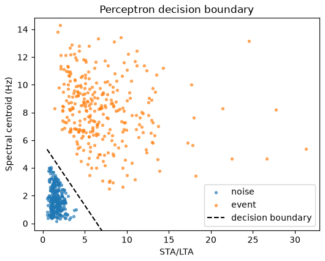
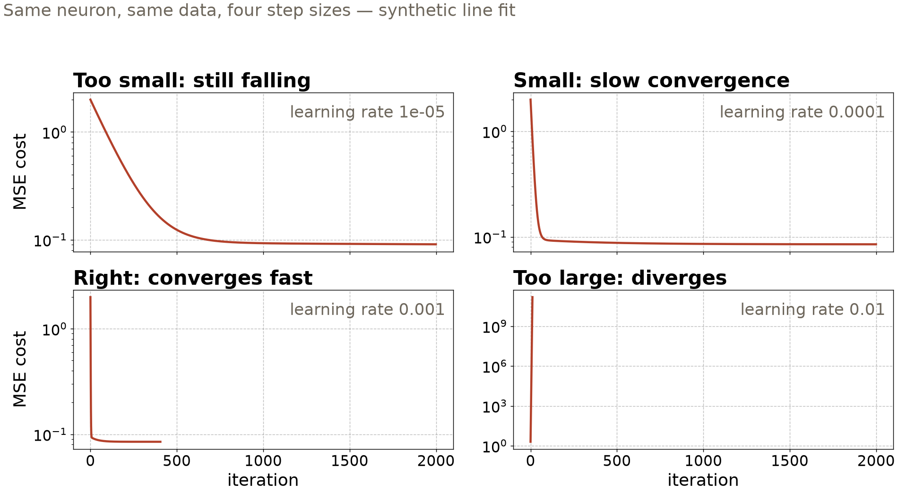

Session 21 · Wed Nov 18 · Book sections 4.0–4.2
🧠
A neural network is a stack of very small machines.
What does one neuron do — and when does stacking neurons buy anything?
Reading: 4.0 Perceptrons · 4.1 Neural networks · 4.2 MLPs
📖 Where it started: a single trainable neuron, sold as a model of the brain.
Rosenblatt, F. (1958). The perceptron: A probabilistic model for information storage and organization in the brain. Psychological Review, 65(6), 386–408.
📖 Why stacking works: one hidden layer, enough units, and an MLP can approximate almost any function.
Hornik, K., Stinchcombe, M., & White, H. (1989). Multilayer feedforward networks are universal approximators. Neural Networks, 2(5), 359–366.
✗ A deep fully connected network on tabular stress features — matched by a single neuron. Capacity is not understanding.
DeVries, P. M. R., et al. (2018). Deep learning of aftershock patterns following large earthquakes. Nature, 560, 632–634. — Mignan, A. & Broccardo, M. (2019). One neuron versus deep learning in aftershock prediction. Nature, 574, E1–E3.
✓ Today’s running example done right: the Pacific Northwest benchmark our 61-feature table descends from — labels, provenance, documentation.
Ni, Y., et al. (2023). Curated Pacific Northwest AI-ready seismic dataset. Seismica, 2(1). doi:10.26443/seismica.v2i1.368
The neuron is from 1958; the honest-comparison discipline is from this decade. Both are today’s material.
\(y = f\left(\sum_i w_i x_i + b\right)\)
Everything you fit in Chapter 3 is already here. A network is this, repeated.

Two detector features, 600 windows, convergence in 2 epochs — but only because we removed the overlap first. One line separates only linearly separable data. Synthetic (mlgeo_synth).
The course rule: write the loop out — no hidden helpers. Every deep model this quarter trains with exactly these four lines.

The learning rate sets the step size: too small crawls, too large diverges. Watch the cost curve, always.
2,116 weights — one hidden layer of 32 neurons
87% test accuracy, four source types
4,000 seismic events from the Pacific Northwest — earthquake, explosion, noise, surface event — 61 waveform features each. Chapter 3’s tuned random forest: the same 80–90% range.
On a small feature table, a one-hidden-layer network and a tuned forest land in the same place. That is the honest headline.
Earthquakes arrive whenever they like. Friday’s fix: convolution — one pattern detector, slid everywhere.
| Idea | Chapter 3 name | Chapter 4 name | Geoscience example |
|---|---|---|---|
| One neuron, sigmoid | logistic regression | one-layer classifier | event vs noise windows |
| Fit by gradient steps | optimization | the training loop | every model this week |
| Held-out steering set | validation set | validation per epoch | PNW source classes |
| Model capacity control | regularization | dropout, early stopping | the 4.2 exercise |
Chapter 4 renames Chapter 3, then adds one thing: layers you can stack to fit the structure of your data.
pixi run jupyter lab → mlgeo_4.0_perceptrons.ipynb: train the perceptron rule; swap spectral_centroid_hz for kurtosis — why does convergence break?mlgeo_4.1_NN.ipynb: run the full PyTorch loop on the PNW features; read the learning curvesmlgeo_4.2_MLP.ipynb: retrain with p_drop=0.0 — watch the train/validation gap openPyTorch names live here: nn.Module, nn.Linear, nn.CrossEntropyLoss, Adam, DataLoader · Ch 6 quiz closes today · HW-CML due Fri · Friday: CNNs (4.3)
ESS 469/569 · Machine Learning in the Geosciences · Autumn 2026